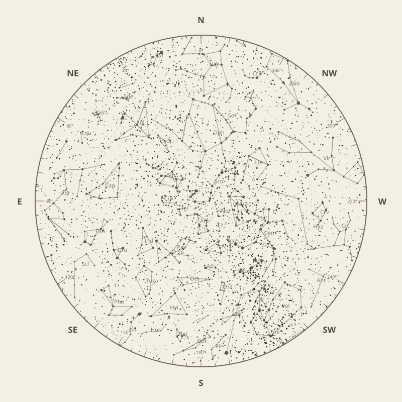

← Annual almanac


North is at the top; east is at the left. Solar System objects shown are above the horizon at 10 pm.
Monthly field almanac
July 2026
Galactic Centre viewing is best on 14 Jul 2026, from 5:30 pm to 4:30 am, reaching 76°.
- New Moon
- 15 Jul Darkest skies
- Full Moon
- 30 Jul Brightest skies
- Best dark window
- 11 Jul 13h 38m
Current conditions
Checking the sky near Southern Tasmania, Australia…
Sky chart: 15 Jul 2026, 10 pm
Southern Tasmania, Australia local time.
Show static monthly chart

Night planner
Choose a date to see astronomical darkness, Moon interference, Galactic Centre visibility, and planet altitudes and times.
Best low-Moon dark periods this month
- 5:28 pm–7:06 am13h 38m · 24% Moon
- 5:29 pm–7:06 am13h 37m · 15% Moon
- 5:30 pm–7:05 am13h 35m · 8% Moon


Galactic Centre sessions
- 5:28 pm–4:38 am11h 10m · core to 76°
- 5:29 pm–4:39 am11h 10m · core to 76°
- 5:30 pm–4:30 am11h 00m · core to 76°
Events
- HIP 94643 lunar occultation4:58 am to 6:02 am; Moon at 37° altitude for the first listed contact.
- HIP 98752 lunar occultation2:26 am to 3:33 am; Moon at 68° altitude for the first listed contact.
- Mercury stationary pointApparent motion changes direction.
July highlights
- Occultations
HIP 93963 lunar occultation
12:27 am to 1:19 am; Moon at 73° altitude for the first listed contact.
- Planetary events
Neptune stationary point
Apparent motion changes direction.
- Comets
Comet 3D
61° altitude; magnitude 16.4.
- Milky Way
Milky Way core window
11h 00m with 76° altitude.
- Planets
Neptune
Best monthly date at 47° altitude.


Moon phases
100%
55%
1%
56%
99%
For faint deep-sky objects, observe when the Moon is below the horizon or weakly illuminated. For lunar relief, observe near the terminator; full Moon is best suited to ray systems and albedo features.
Download Moon phase CSV →

Planet visibility
Evening
- Venus29 Jul · 5:30 pm34° · Good
- Jupiter1 Jul · 5:30 pm8° · Poor
 Venus
Venus Jupiter
JupiterPredawn
- Neptune31 Jul · 4:00 am47° · Excellent
- Saturn1 Jul · 6:30 am44° · Good
- Uranus31 Jul · 7:00 am25° · Good
- Mars31 Jul · 7:00 am18° · Fair
- Mercury31 Jul · 7:00 am7° · Poor
 Neptune
Neptune Saturn
Saturn Uranus
Uranus Mars
Mars Mercury
Mercury